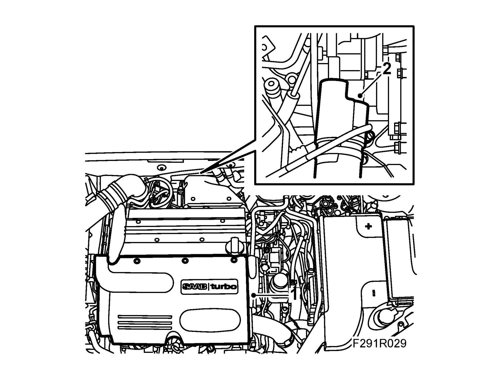
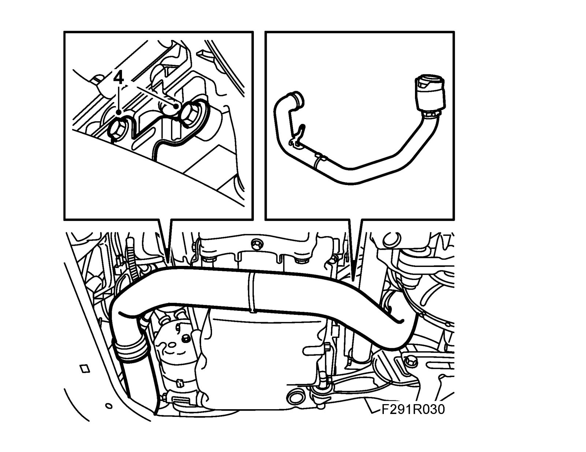
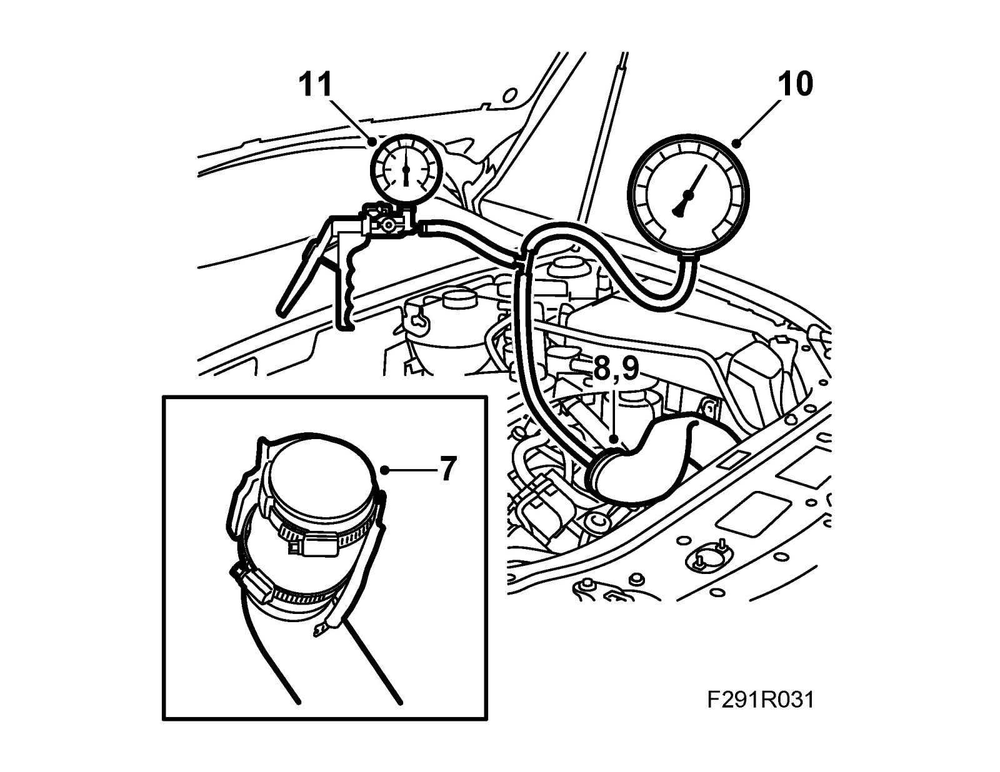
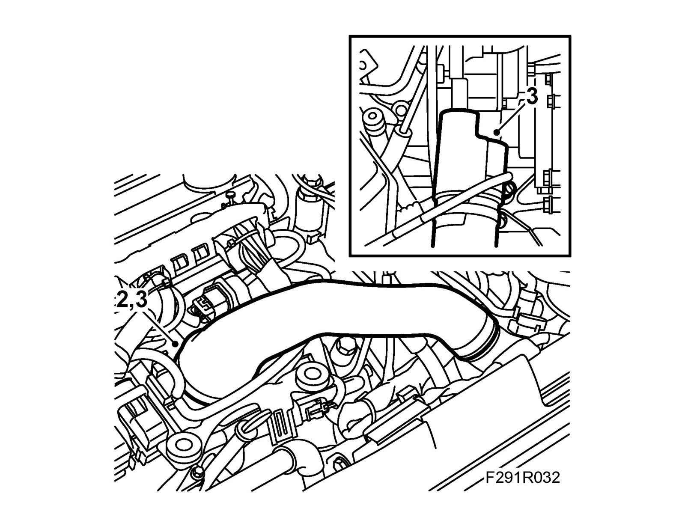
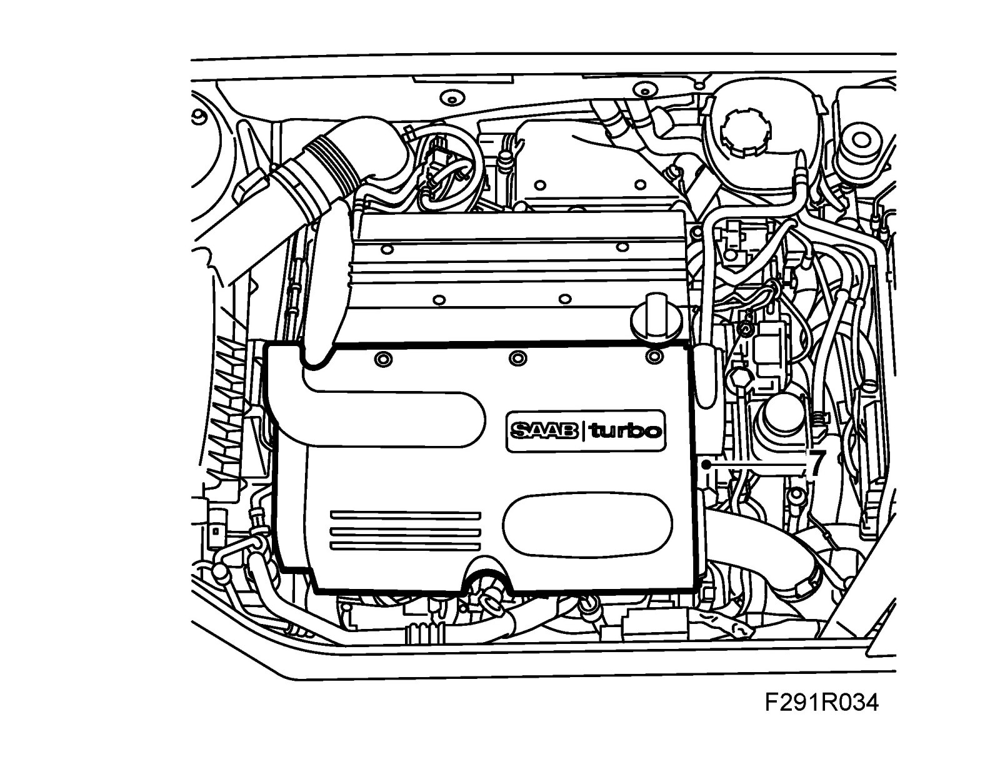

Intercooler: Testing and Inspection
Pressure testing the charge air cooler and delivery pipe, B207To remove
Important
Exercise great care when pressurizing the charge air system. Too high pressure can damage the radiator, hoses and connections.
1. Remove the upper engine cover.

2. Remove the upper hose clips on the charge air hose under the turbo.
3. Raise the car. CV: Remove Chassis reinforcement, front supporting frame, CV
4. Remove the charge air pipe retaining bolts on the oil pan.

5. Pull down the charge air pipe so that the hose connection comes loose from the turbo.
6. Lower the car.
7. Fit 83 94 587 Plug, turbo hose in the charge air pipe hose and tighten the hose clip.

8. Detach the charge air hose from the throttle body.
9. Fit 83 94 595 Plug, turbo hose in the hose and tighten the hose clip.
10. Connect 83 93 514 Charge pressure meter to the plug.
11. Connect an air gun to the charge pressure meter's T-coupling.
12. Carefully create a pressure of around 1 bar.
13. Check that the pressure does not fall more than 0.1 bar in 30 seconds. If the pressure drop is greater or if hissing can be heard, then check the hoses, pipes and connections for leaks. Use soap water or similar to detect any leaks.
14. If there are no leaks in the hoses or pipes and the pressure drops, remove the charge air cooler and test pressurize it. See to remove and to fit, charge air cooler.
To fit
1. Release the pressure and remove the charge air pressure meter.
2. Remove the plugs from the charge air pipe hoses.

Important
To reduce the risk of hoses mounted on the delivery side of the turbocharger coming loose due to low friction at high air pressure, the hoses and connecting pieces must be cleaned thoroughly before fitting. Use a rag dampened with 93 160 907 Motip Dupli cleaning agent to wipe clean inside the ends of the hoses. Clean the connecting pieces as well. If hose clips are rusty or damaged, they must be replaced so the correct clamping force is maintained.
3. Fit the hoses to the turbo and throttle body and tighten the hose clips.
4. Raise the car.
5. Fit the screw to the charge air cooler on the engine oil pan. CV: Fit chassis reinforcement, front supporting frame, CV
6. Lower the car.
7. Fit the upper engine cover.
